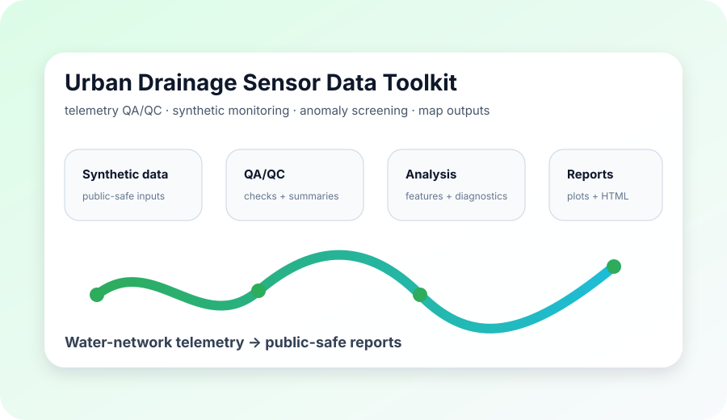

Problem
Urban drainage monitoring systems combine telemetry from remote devices, rainfall gauges, SCADA-style exports, folder structures and field metadata. Before these data can support reporting or machine learning, they need robust QA/QC and safe publication boundaries.
Approach
- Generate synthetic monitoring telemetry for public demonstrations.
- Parse and clean timestamps, identify duplicates and estimate missing-data periods.
- Create daily QA/QC summaries, static HTML/CSV reports and report plots.
- Run optional sensor-health anomaly screening on synthetic telemetry.
- Generate synthetic monitoring-map outputs without real coordinates, site IDs or client information.
What it demonstrates
This project is the best candidate for a first one-click demo because it is visual, synthetic by design and directly shows telemetry QA/QC, reports, anomaly screening and map outputs.
git clone https://github.com/sergioald/urban-drainage-sensor-data-toolkit.git
cd urban-drainage-sensor-data-toolkit
python -m pip install -e ".[dev]"
python -m pytest -q
urban-drainage-qaqc demo
cd urban-drainage-sensor-data-toolkit
python -m pip install -e ".[dev]"
python -m pytest -q
urban-drainage-qaqc demo